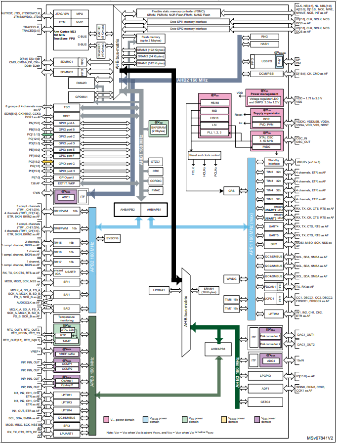
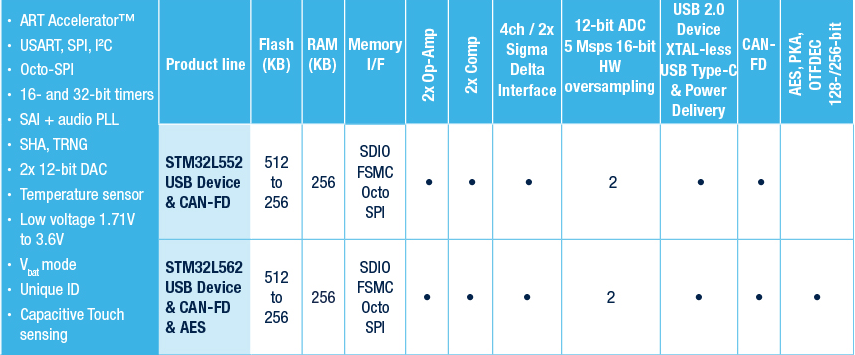

STM32U575¶
STM32L412 –> STM32L5 –> STM32U575
Xin简介¶

Ultra-low-power with FPU Arm Cortex-M33 with Trust Zone, MCU 160 MHz with 1Mbytes of Flash memory
规格参数¶
STM32U5 的定义是一个低功耗旗舰级产品线，最大的3个特点：
超低功耗
在超低功耗平台上提升了性能，是基于高性能和超低功耗两者结合的集合
增强了安全可靠方面的功能，适合IoT 应用
基本参数¶
发布时间：
参考价格：
制程工艺：40 nm
供货周期：
封装规格：LQFP48/QFN48/LQFP64/WLCSP90/LQFP100/UFBGA132/LQFP144/UFBGA169
运行环境：-40°C to 85/125°C
RAM容量：786 KB
Flash容量：1/2 MB

特征参数¶
160 MHz Cortex-M33
535 ULPMark-CP
149 ULPMark-PP
133000 SecureMark-TLS
2x 12bit DAC
2x PGA
芯片架构¶
功耗参数¶
电压范围：1.71 to 3.6 V
功耗范围：
运行功耗: 19 µA/MHz
关断模式下110 nA
待机模式300 nA
停机模式3下为1.7 µA，具有16 KbB的SRAM可访问
停机模式2下为6.6 µA，全部具有786 KBb的SRAM可访问

Xin选择¶
品牌对比¶
系列对比¶

STM32L5¶
STM32L5系列 110 MHz Cortex-M33 (443 CoreMark)，并将其面向Armv8-M架构的TrustZone与意法半导体安全实现方案相结合。
512 KB的（双Bank）闪存和256 KB的SRAM，通过采用新型内核和全新的意法半导体 ART Accelerator™（现在也支持外部存储器）。
7个封装类型（LQFP48、QFN48、LQFP64、WLCSP81、LQFP100、UFBGA132、LQFP144），还支持高达125°C的工作环境温度。
关断模式下17 nA
在停止模式3µA，具有全SRAM和外设状态保持能力，能够在5µs内唤醒
激活模式下电流低至62 µA/MHz
版本对比¶
Xin应用¶
硬件平台¶
NUCLEO-U575ZI-Q¶